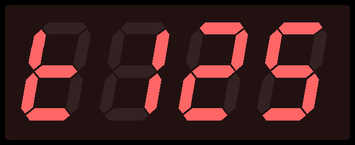

Koi Cafe
Arduino Nano

(13 augustus 2022)
Voederprogramma

| Programma | DIP Switch |
Voedertijden |
| Pr00 Pr01 Pr02 Pr03 Pr04 Pr05 Pr06 Pr07 |
000 001 010 011 100 101 110 111 |
08:00 12:00 16:00 20:00 08:00 11:00 14:00 17:00 20:00 08:00 11:00 14:00 17:00 19:30 22:00 05:00 07:00 10:00 13:00 16:00 19:30 22:00 05:00 07:00 09:30 12:00 14:30 17:00 19:30 22:00 05:00 07:00 09:00 11:00 13:00 15:00 17:00 19:30 22:00 05:00 07:00 08:45 10:30 12:15 14:00 15:45 17:30 19:30 22:00 05:00 07:00 08:30 10:00 11:30 13:00 14:30 16:00 17:30 19:00 20:30 22:00 |
Feeding duration

Hand or (full) automatic feeding